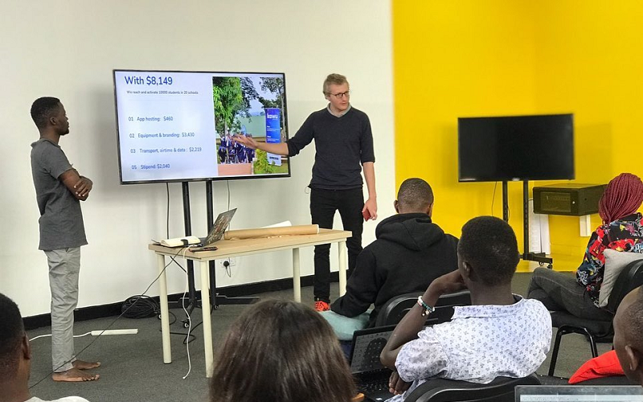

TECH HUB
The Tech Hubs Program aims to strengthen Uganda's economic and national security with investments in regions across the country with assets and resources with the potential to become globally competitive in the technologies and industries of the future and for those industries, companies, and the good jobs they create, to start, grow, and remain in uganda.
This program brings together diverse public, private, and academic partners into collaborative consortia focused on driving inclusive regional growth. With their existing innovation assets as a foundation, these Tech Hubs will build the workforce of the future; enable businesses to start and scale; and deploy and deliver critical and emerging technologies.
About the Tech Hubs Program
The Tech Hubs Program will invest directly in regions with the assets, resources, capacity, and potential to transform into globally competitive innovation centers in approximately 10 years, while catalyzing the creation of good jobs for American workers at all skill levels, equitably and inclusively.
The Tech Hubs Program was enacted as part of the CHIPS and Science Act of 2022 (as the Regional Technology and Innovation Hubs program). The statute authorized $10 billion for the program over five years. As part of the FY 2023 Consolidated Appropriations Act, Congress appropriated EDA $500 million to launch the program. This program invests in U.S. regions that are focused on technologies within or across the key technology focus areas outlined in the statute.